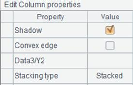
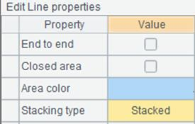
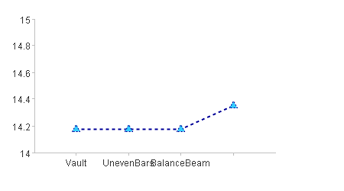
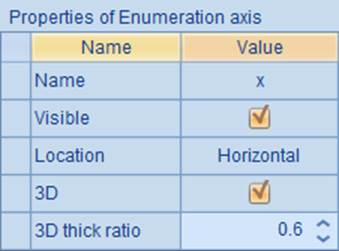
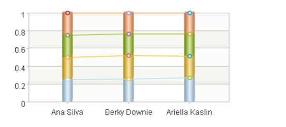

12.7.4 Stacked column chart
Stacked column charts stack multi-serie columns of data of the same category, instead of placing them side by side. Below is the plotting algorithm of such a chart:
|
|
A |
|
1 |
=canvas() |
|
2 |
=demo.query("select * from GYMSCORE") |
|
3 |
=A1.plot("BackGround") |
|
4 |
=A1.plot("EnumAxis","name":"x") |
|
5 |
=A1.plot("NumericAxis","name":"y","location":2) |
|
6 |
=A1.plot("Column","stackType":2,"axis1":"x","data1":A2.(NAME+","+ EVENT),"axis2":"y","data2":A2.(SCORE)) |
|
7 |
=A1.plot("Line","stackType":2,"axis1":"x","data1":A2.(NAME+","+EVENT), "axis2":"y","data2":A2.(SCORE)) |
|
8 |
=A1.draw@p(450,200) |
You can also make a stacked line chart by plotting line elements, whose properties are similar to those of the column element. This plotting algorithm plots both a column chart and a polyline chart. Different from preceding examples, when setting data properties for the column element and line element, it sets Data1 as A2.(NAME+","+EVENT), making NAME the category values on the enumeration axis and EVENT the series values. The Stack type property is set in both A6 plotting the column element and A7 plotting the line element, changing the default Not stack to Stacked, as shown below:
 
With this setting, the plotting result is as follows:

As can be seen, the columns for displaying the event results of each athlete are stacked. Thus you can see the total result of each athlete on the finished chart.
Another type of stacked chart is the one using Percent stacked, which can be plotted by setting the following properties:
 
And the plotting result is:

For the chart in which the columns and lines are stacked by percent, data proportions of all series in each category are plotted and the total percent of data in each series is 100%. That way data is compared by percent and the total data value in each category loses its significance.